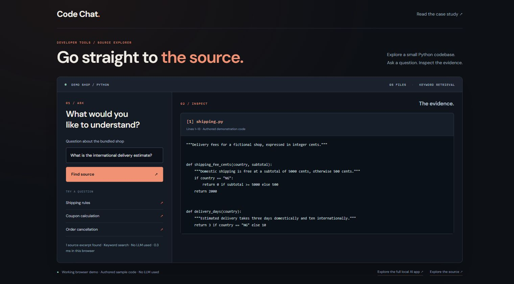

Your code.
An evidence trail.
GitHub Code Chat helps developers explore a repository through source excerpts and locally generated explanations. Every answer keeps the supporting code within reach.

01 / THE PROBLEM
Understand unfamiliar code faster.
A repository can contain more code than a model can read at once. An answer is useful only if the developer can inspect the functions and conditions behind it.
This project makes retrieval visible: find relevant excerpts, keep their file and line references, and offer a local model as an optional explanation layer.
02 / THE PIPELINE
Retrieve first. Explain second.
The Streamlit app starts with a bundled fictional shop, so a fresh install can search immediately without model downloads. Local AI mode uses Ollama, nomic-embed-text and llama3.2.
Imported repository links use the indexed commit. Each browser session keeps its own active index in memory. Failed loading retains the previous snapshot, and conversations can be exported with their sources.
03 / INTERACTIVE SOURCE SEARCH
Ask about the bundled shop.
Try keyword retrieval on five small Python files. This demo returns actual code excerpts; it does not generate an AI answer or access other repositories.
Loading the bundled source code…
04 / THE EVIDENCE
Compare retrieval methods.
The recorded comparison uses 20 authored questions on five authored files: 16 answerable and four outside the example’s scope. Hit@1 measures whether the expected file ranks first; it does not measure answer correctness.
| Method | Hit@1 | Hit@3 |
|---|---|---|
| Keyword / BM25 | 15 / 16 | 16 / 16 |
| Vector / cosine | 14 / 16 | 16 / 16 |
| Hybrid / rank fusion | 16 / 16 | 16 / 16 |
A small demonstration check, developed with the example in view. It is not an independent benchmark or evidence of general performance on real repositories.
Inspect the recorded AI answers
These are saved outputs from the local model, not live responses. Some contain incorrect statements despite valid citation numbers.
05 / WHAT REMAINS
Valid citations can still support a wrong answer.
Manual review found that the model confused the discount function with the final-total function, overstated the shipping fee, and invented a precise source-line location. The citation check verifies reference numbers, not the truth of the explanation.
Dense retrieval also returns nearest neighbors for unrelated questions. The model abstained on the four out-of-scope examples in the recorded run, but that behavior is not guaranteed.
The next step is independent evaluation on real repositories, with supporting passages, multi-file questions, and separate answer-quality judgments. Function-aware parsing, reranking and exact token accounting remain useful experiments.
This is a local prototype. Hosting a shared inference service would require further work on concurrency, isolation, and resource limits.